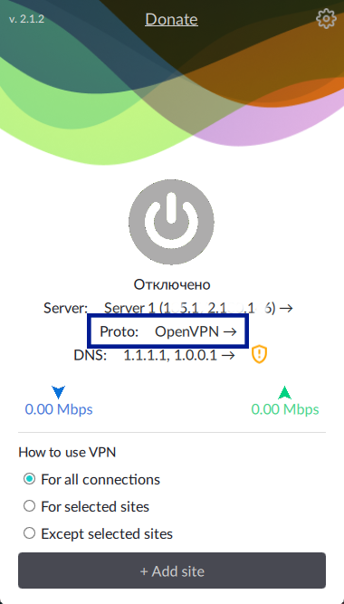
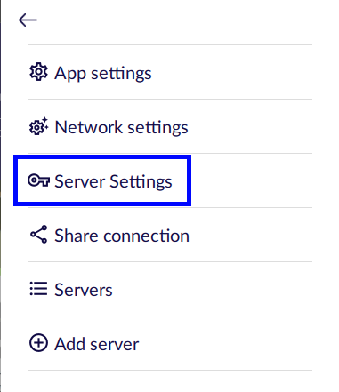
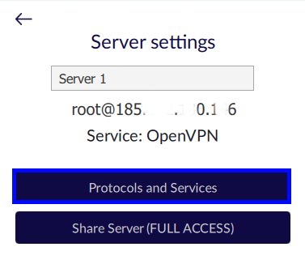
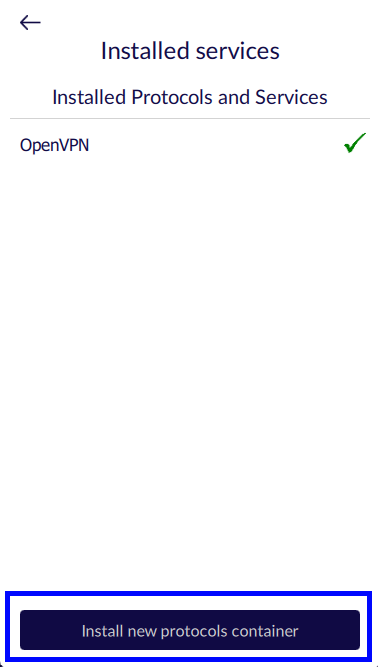
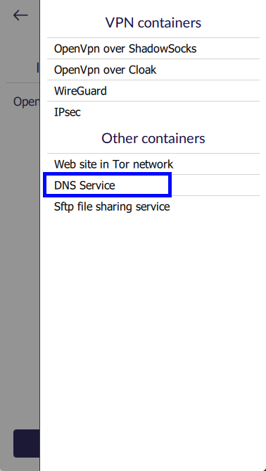
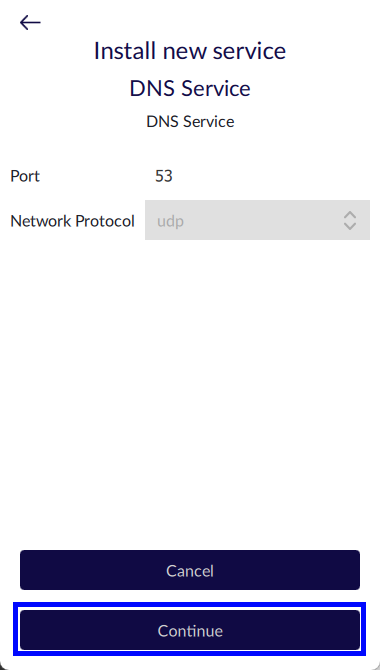

Установка сервера с собственным DNS
РусскийRu

Подключитесь через клиент Amnezia к вашему VPN.
Если у вас его нет VPN создайте его с помощью Run Setup Wizard или с помощью Configure VPN protocols manually.
Далее вы можете действовать двумя способами на выбор:

Кликните на протокол, откроется экран со всеми вашими
установленными протоколами

Или кликните на значок настроек в правом верхнем углу
экрана, а затем выберете серверы “Server
Settings”

В меню настроек сервера выберете “Protocols and Services”
Далее в обоих случаях необходимо кликнуть на “Install new protocols container”
установить новые протоколы, а на следующем экране выбрать “DNS Service”


Перед Вами будет представлена пара опций, а именно используемый порт (его здесь менять нельзя)
и возможность выбора TCP/UDP протокола. Вы также можете ничего не менять и просто нажать далее
“Setup server”

Вы можете выбрать сетевой протокол, если принимающая трафик часть поддерживает такую возможность.
Например, OpenVPN может работать как через TCP, так и через UDP.
WireGuard работает только через UDP.
А в случае OpenVPN over ShadowSocks принимать Ваш трафик будет именно ShadowSocks,
который работает только через TCP протокол, поэтому в его случае выбор так же не предусмотрен.
Готово!